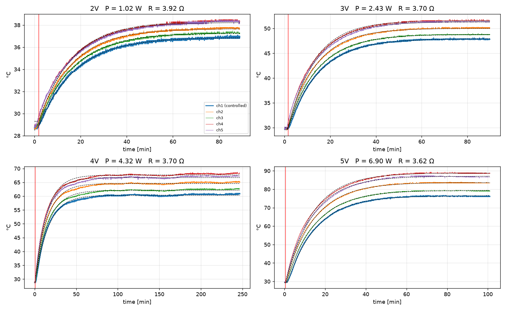
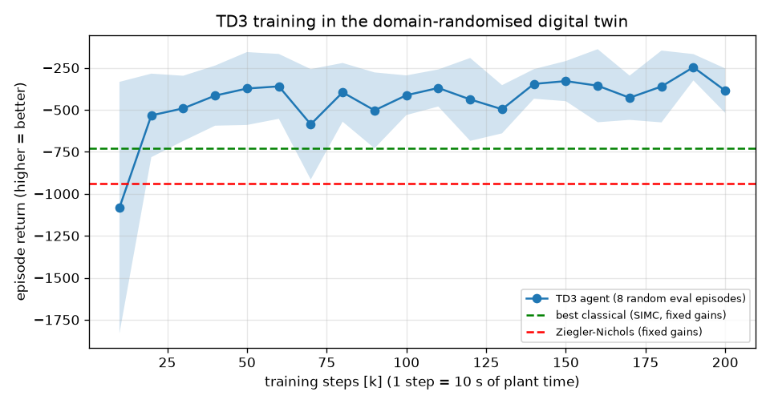
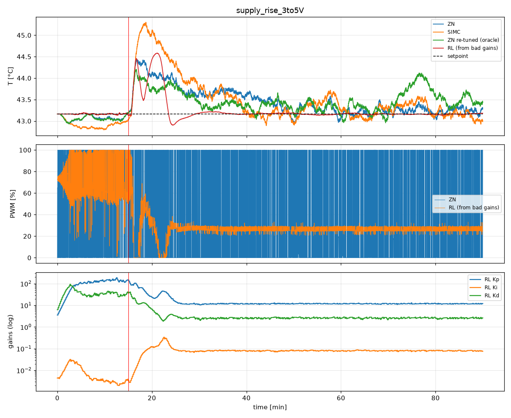
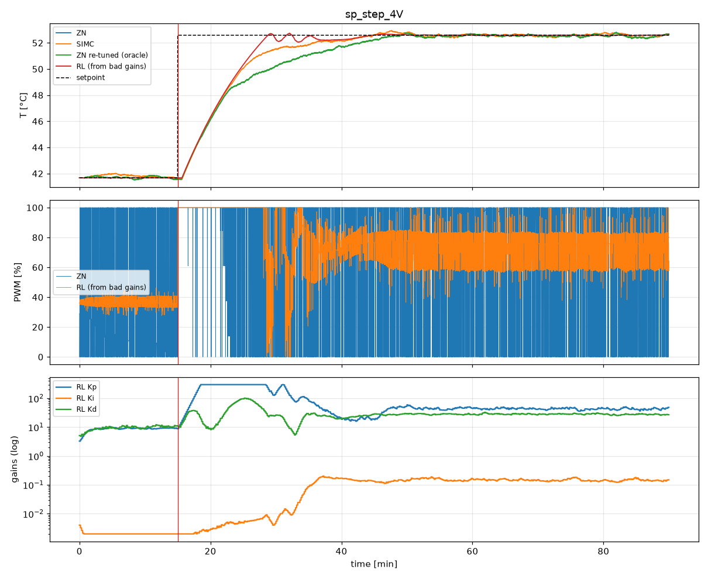
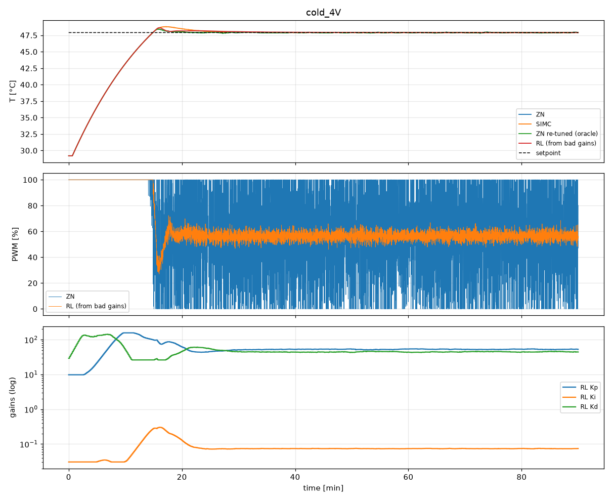

TD3 actor–critic on a low-cost Arduino temperature testbed. Trained on a digital twin of our own step-test data, benchmarked against Ziegler–Nichols, Cohen–Coon, SIMC, AMIGO, IMC and MATLAB pidtune.
Deepak Kumar Chauhan · Azaad Katiyar · Divy Kumar Pandey
Use ← → keys (or the buttons). Ctrl+P saves a PDF, one slide per page. “Accuracy %” = best IAE ÷ agent IAE × 100 (100 % = equal, >100 % = agent better).
PID loops are tuned once, at commissioning, and then left alone. Real processes drift: fouling, wear, ambient changes, supply changes. The tuning goes stale.
Characterising our heater at 4 supply voltages took 522 minutes (8.7 hours) of step testing (87 + 88 + 246 + 101 min). The rig's time constant is about 15 minutes, so each test needs 1–1.5 h to settle.
And the result is voltage-dependent: MATLAB's own pidtune gives a 5× different Kp at 2 V than at 5 V. A fixed tuning is only right at one operating point.
Survey figures are as reported in the cited publications.
Supply or process changes? Repeat everything.
Supply or process changes? The agent adapts the gains on the fly.
A site with 500 PID loops where 20 % drift enough each year to need a re-tune, at 4 engineer-hours per loop including the step test, spends 400 engineer-hours a year on re-tuning, plus the off-spec product during each test. Thermal loops like ours take hours per test. An agent that keeps the loops tuned removes that recurring cost and the variability of the months between re-tunes.
The numbers above are assumptions chosen to show the scale. Replace them with your plant's numbers.
We control the temperature at the farthest point from the heater: the hardest one, with the largest dead time (40–65 s). A0 = NTC temperature, A1 = current, A2 = supply voltage, so the agent sees heater power directly.
Gate: D9 → 220 Ω → STP55NF06 gate, 10 kΩ gate-to-GND pull-down, common ground between the heater supply and the Nano. The 25V sensor sits across the supply (before the MOSFET). Calibration constants are at the top of the .ino.
Off-the-shelf hobby parts. The intelligence is in the software, not in expensive hardware.
| Part | Exact model | Role | Pin | Listed price |
|---|---|---|---|---|
| Microcontroller | Nano R3, CH340 USB chip (Arduino-compatible) | fast PID loop, sensors, PWM | USB to laptop | ₹180 |
| Temperature sensor | B3950 100K NTC thermistor, glass head, 1 m | controlled temperature (farthest point) | A0 (4.7 kΩ divider) | ₹49 |
| Current sensor | ACS712 30A hall-effect module (66 mV/A) | heater current | A1 | ₹80 |
| Voltage sensor | Voltage Detection Sensor Module 25V (5:1) | inlet / supply voltage | A2 | ₹40 |
| Power switch | STP55NF06 N-channel MOSFET, 60 V 50 A, TO-220 | switches the heater (PWM) | D9 → gate | ₹21.50 |
| Heater | 24 V 40 W ceramic cartridge heater | the actuator | MOSFET drain | ₹118 |
| Total (excluding the DC supply and the laptop) | ≈ ₹490 | |||
Prices as listed by the shops (some exclude GST). The STP55NF06 is not a logic-level MOSFET: at 5 V gate drive it is fine for our ~1–2 A, but a logic-level part (e.g. IRLZ44N) or a gate driver runs cooler at higher currents.
| Run | Current | Power | ΔT (ch1) | K °C/W | τ s | θ s |
|---|---|---|---|---|---|---|
| 2 V | 0.51 A | 1.02 W | 8.1 | 7.92 | 944 | n/a |
| 3 V | 0.81 A | 2.43 W | 18.2 | 7.50 | 816 | n/a |
| 4 V | 1.08 A | 4.32 W | 31.6 | 7.30 | 915 | 40 |
| 5 V | 1.38 A | 6.90 W | 47.0 | 6.80 | 838 | 65 |
τ·dT/dt = K₀·P(t−θ) − ΔT(1+βΔT)
Coloured: measured. Black dashed: fitted model. Red line: voltage switched on.
| Method | Kp | Ki | Kd |
|---|---|---|---|
| Ziegler–Nichols (open loop) | 93.96 | 1.1745 | 1879.2 |
| Cohen–Coon | 105.22 | 1.0878 | 1518.9 |
| SIMC (Skogestad) | 39.15 | 0.1223 | 522.0 |
| AMIGO | 35.89 | 0.1561 | 708.9 |
| IMC (λ tuning) | 12.43 | 0.0128 | 243.4 |
| MATLAB pidtune (PID → chose PI) | 4.700 | 0.00906 | 0 |
| MATLAB pidtune per supply | Kp | Ki | Kd |
|---|---|---|---|
| 2 V | 16.379 | 0.02824 | 0 |
| 3 V | 7.752 | 0.01407 | 0 |
| 4 V (baseline) | 4.700 | 0.00906 | 0 |
| 5 V | 3.261 | 0.00671 | 0 |
Even MATLAB needs a 5× different Kp across the supply range. With fixed gains, every voltage change means a new step test and a new tuning run.
All controllers run as Arduino PID_v1 (0–100 % PWM, anti-windup, derivative on measurement), the same code as the rig.
| Design | |
|---|---|
| Fast loop | PID_v1 on the Nano, every 1 s |
| Slow loop | TD3 policy every 10 s → ΔKp, ΔKi, ΔKd |
| Observation (10) | error, temperature slope, mean PWM, PWM chatter, Kp/Ki/Kd, measured supply V, headroom, ΔT |
| Action | multiplicative (log-space) gain steps, hard bounds Kp 1–300, Ki 0.002–3, Kd 1–3000 (clamped again on the Nano) |
| Reward | −|e| − 2·overshoot − λ·|Δu| (track tightly, don't overshoot, don't hammer the heater) |
| Training | 200 k decisions ≈ 23 days of simulated plant time. Each episode draws a new plant (K₀, β, τ, θ, R, ambient, noise) and a supply/setpoint change |
| Why TD3 | twin critics (no Q over-estimation), delayed actor, target smoothing: safer for a heater |

Eval return during training (higher = better). Dashed lines: fixed-gain SIMC and ZN on the same reward.
Every controller gets the same plant, scenario and sensor noise. Classical gains are tuned once at 4 V. The agent starts either from ZN gains or from deliberately bad gains.
| Controller | Mean IAE (°C·s) ↓ | Median IAE ↓ | Not settled at end ↓ | PWM chatter %/s ↓ | Agent accuracy vs this |
|---|---|---|---|---|---|
| Ziegler–Nichols | 8581 | 7090 | 12/40 | 42.9 | 150 % |
| Cohen–Coon | 7735 | 6647 | 14/40 | 41.2 | 136 % |
| SIMC (best classical) | 6996 | 6023 | 10/40 | 39.2 | 123 % |
| AMIGO | 8143 | 7013 | 12/40 | 41.6 | 143 % |
| IMC | 8562 | 6940 | 17/40 | 36.4 | 150 % |
| MATLAB pidtune | 9849 | 8765 | 12/40 | 0.9 | 173 % |
| TD3 agent (from ZN gains) | 5706 | 4422 | 5/40 | 11.4 | n/a |
| TD3 agent (from bad gains) | 5945 | 4827 | 2/40 | 10.8 | n/a |
| Scenario | Best classical (IAE) | MATLAB IAE | TD3 IAE | TD3 accuracy vs best | vs ZN | vs MATLAB | Chatter ZN → TD3 |
|---|---|---|---|---|---|---|---|
| Cold start 2 V | SIMC 3189 | 7244 | 2659 | 120.0 % | 132.7 % | 272.5 % | 47 → 33 |
| Cold start 3 V | SIMC 5437 | 9238 | 5119 | 106.2 % | 112.3 % | 180.4 % | 46 → 16 |
| Cold start 4 V (tuning point) | Cohen–Coon 8002 | 10420 | 7889 | 101.4 % | 104.7 % | 132.1 % | 43 → 10 |
| Cold start 5 V | SIMC 10937 | 14902 | 11292 | 96.9 % | 98.6 % | 132.0 % | 42 → 21 |
| Supply rise 3 → 5 V | Cohen–Coon 1090 | 5391 | 537 | 203.1 % | 259.4 % | 1003.9 % | 48 → 7 |
| Supply drop 5 → 3 V | ZN 601 | 5494 | 1411 | 42.6 % | 42.6 % | 389.4 % | 49 → 18 |
| Setpoint step at 4 V | SIMC 5177 | 5995 | 4373 | 118.4 % | 143.9 % | 137.1 % | 44 → 13 |


Setpoint step at 4 V: TD3 IAE 4373 vs SIMC 5177 (118 %), chatter 44 → 13 %/s.

Cold start at 4 V, where the classical gains were tuned: TD3 7889 vs Cohen–Coon 8002 (101 %).
T:41.25,SP:50,E:8.75,U:100,V:4.01,I:1.07,P:4.3,G:20,0.05,100K:Kp,Ki,Kd → Nano SetTunings()# run_on_rig/live_tuner.py (core loop, simplified) model = TD3.load("models/td3_best/best_model.zip") while True: d = parse(ser.readline()) # 1 line per second window.append(d) if len(window) >= RL_EVERY: # every 10 s obs, z = build_obs(window, T_prev, V, cfg) act = model.predict(obs, deterministic=True)[0] z = clip(z + STEP_Z * act, -1, 1) # log-space gains kp, ki, kd = z_to_gain(z) # within safe bounds ser.write(f"K:{kp},{ki},{kd}\n") # Nano applies live print(T, SP, PWM, V, I, P, Kp, Ki, Kd) # live table
build_obs() mirrors ThermalPIDEnv._obs().run_on_rig/arduino_nano_rl_pid/arduino_nano_rl_pid.inoT: = room temperature, V: = supply voltage, I: = multimeter. Then close it (and CoolTerm).git clone https://github.com/dkchauhan2006/rl-pid-autotuner cd rl-pid-autotuner python -m venv .venv && .venv\Scripts\activate pip install torch --index-url https://download.pytorch.org/whl/cpu pip install -r requirements.txt
auto finds the CH340 Nano)# a) watch only: prints the gains it WOULD send python run_on_rig/live_tuner.py auto --setpoint 50 --shadow # b) live RL tuning (+ live plot) python run_on_rig/live_tuner.py auto --setpoint 50 --plot # c) comparison runs with fixed gains python run_on_rig/live_tuner.py auto --setpoint 50 --fixed zn python run_on_rig/live_tuner.py auto --setpoint 50 --fixed matlab
Prints every second: t · T · SP · err · PWM% · V · I · P | Kp · Ki · Kd · action. Logs to run_on_rig/logs/*.csv.
To test the claim: settle at 4 V, switch the supply to 3 V or 5 V, then repeat with --fixed zn and compare the logs.
rl-pid-autotuner/ ├── data/raw/ # our step tests 2-5 V (5 thermocouples, 1 Hz) ├── docs/ # proposal, lab-notebook readings ├── system_id.py # data → plant model (models/plant_params.json) ├── plant.py # digital twin + Arduino-equivalent PID ├── tuning_rules.py # ZN, Cohen-Coon, SIMC, AMIGO, IMC ├── thermal_pid_env.py # Gymnasium env (voltage changes, randomisation) ├── train_td3.py # TD3 / DDPG training ├── evaluate.py # agent vs all baselines → results/ ├── matlab/pidtune_compare.m ├── models/td3_best/best_model.zip # ⭐ trained agent ├── results/ # tables, plots, MATLAB CSV ├── run_on_rig/ │ ├── arduino_nano_rl_pid/arduino_nano_rl_pid.ino # Nano: A0 NTC, A1 I, A2 V │ └── live_tuner.py # real-time tuning on the rig └── results/presentation.html # this deck
python system_id.py # 0.40 °C RMS model fit python train_td3.py # ~1 h CPU python evaluate.py --random 40
Next: validate on the rig with live supply switching, DDPG comparison, and the inverting-gradient safety bound from the proposal.
github.com/dkchauhan2006/rl-pid-autotuner · References: Desborough & Miller (2002) “Increasing customer value of industrial control performance monitoring: Honeywell's experience”, CPC-VI · Ender (1993) “Process control performance: not as good as you think”, Control Engineering · Åström & Hägglund (1995/2006) PID Controllers / Advanced PID Control, ISA · Fujimoto et al. (2018) TD3, ICML.